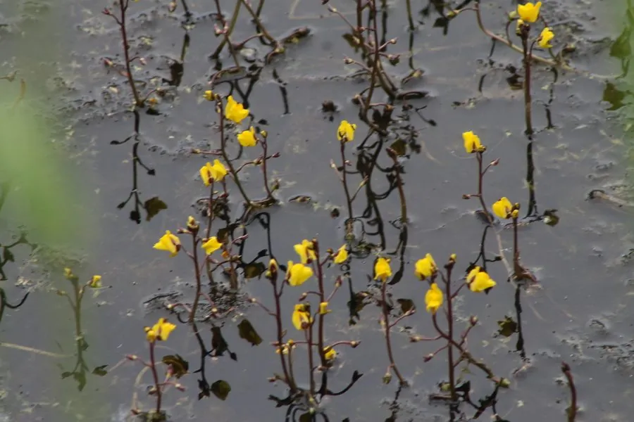

水生植物 · 植物界
狸藻 Utricularia vulgaris

狸藻科多年生沉水草本，无真正的根，靠捕虫囊捕食水蚤等微小动物，是极为少见的水生食虫植物之一。
- 分类
- 门被子植物门纲木兰纲目唇形目科狸藻科属狸藻属
- 栖息环境
- 池塘、沟渠、沼泽等静水或缓流水体，喜酸性贫营养清水
- 地理分布
- 北半球温带至亚热带广布，中国各地淡水湿地常见
- 保护级别
- 暂无评估；水体污染与湿地围垦使局部种群减少
物种志
狸藻为狸藻科狸藻属多年生沉水草本，无根，茎细长分枝，长可达 1 米。叶羽状细裂，形如丝线，基部着生许多扁圆形的捕虫囊，囊口有触毛与瓣膜。花葶挺出水面，总状花序着花 3–10 朵，花冠黄色、唇形，下唇有距，花期 6–8 月；蒴果球形。
狸藻广布于北半球温带至亚热带的池塘、沟渠与沼泽，中国各地静水中常见，适宜水深 20–60 厘米，喜阳光充足、酸性至中性的清洁贫营养水体。捕虫囊内呈负压，触毛被水蚤等小动物触碰时瓣膜打开，猎物随水流被吸入囊中消化，是植物界动作最快的捕食之一。它既能捕食微小动物补充氮素，又能为鱼苗提供隐蔽场所，但生长过旺时可能缠绕其他水草。栽培以分株繁殖，需清洁、无藻的水体。
形态与习性
- 株长茎长可达 1 米，叶羽状细裂如丝
- 水深适宜水深 20–60 厘米，全株沉水
- 水质喜酸性至中性、贫营养的清洁软水
- 花期6–8 月，花葶挺水，花冠黄色唇形
- 捕食捕虫囊捕食水蚤、轮虫等微小动物
- 繁殖茎段分株或休眠芽越冬
趣味知识
- 狸藻没有真正的根，靠丝状叶吸收养分，用捕虫囊捕捉水蚤等小动物补充氮素。
- 捕虫囊在待命时内部处于负压，触毛被触碰后瓣膜瞬间打开，猎物随水被吸入。
- 它是少数完全沉水生活的食虫植物，花却要挺出水面开放以便昆虫传粉。
- 冬季它会形成休眠芽沉入水底，翌年春天再萌发新株。